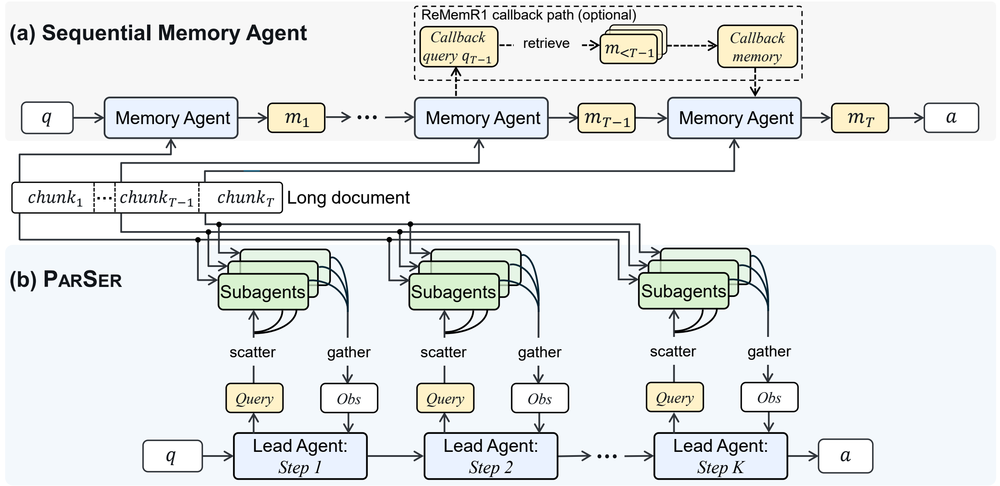
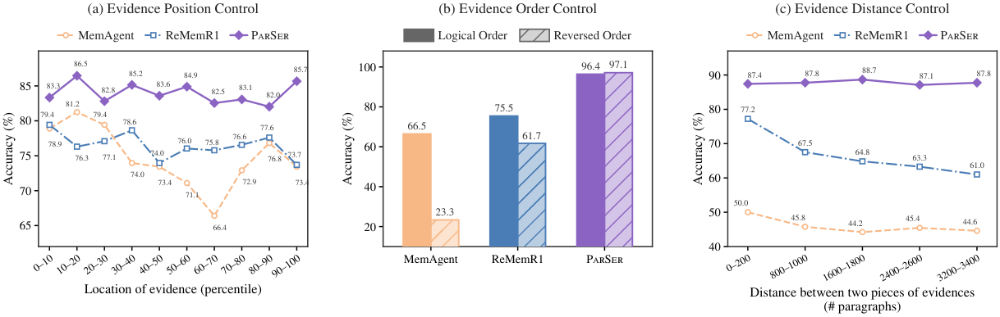

⇶
Parallel reading
Every document chunk is inspected concurrently and symmetrically by a dedicated reader.
The order of a document should not dictate the order of reasoning.
The Chinese University of Hong Kong *Equal contribution
Introduction
Sequential memory agents read long documents chunk by chunk while maintaining a compact memory state. This couples document traversal to reasoning depth, making accuracy sensitive to where evidence appears and forcing latency to grow with document length.
PARSER turns document length from sequential depth into parallel width. Lightweight subagents read every chunk concurrently, while a lead agent iteratively asks focused questions, gathers evidence, and reasons across only the rounds the problem actually requires.
Every document chunk is inspected concurrently and symmetrically by a dedicated reader.
The lead agent refines queries across scatter–gather rounds as new evidence emerges.
Only the lead policy is optimized with verifiable rewards; lightweight readers stay frozen.
“Read the document in parallel. Reserve sequential computation for reasoning.”
Method
Given a question q and a long document D, PARSER first divides D into T fixed-size chunks. Multi-hop evidence is usually sparse and distributed across these chunks, so the central challenge is not merely fitting the document into a context window, but locating and composing the right evidence in the right reasoning order.
Sequential memory agents repeatedly compress each new chunk into a textual memory. PARSER instead turns document length into parallel width. At every round, all T chunk readers inspect their assigned text concurrently, while only the K question-driven reasoning rounds remain sequential. This removes document traversal from the critical path.

Each frozen subagent is permanently bound to one short chunk. When it receives a focused query, it inspects only that chunk and returns a grounded finding or abstains. All T readers execute concurrently, giving every chunk symmetric access regardless of its position in the document.
The lead agent sees the original question and previously gathered findings, but no raw document tokens. In a ReAct-style loop, it decides whether to issue one or more new queries or commit to a final answer.
At round k, focused queries are scattered to all readers and non-empty findings are gathered into the lead agent's history. Those findings condition round k + 1, allowing later hops to be discovered without recurrent compression or irreversible information loss.
Only the lead policy is optimized; all readers remain frozen. GRPO uses a binary exact-match outcome reward to teach query decomposition, reader coordination, and answer timing. Gathered observation tokens are masked so gradients apply only to lead-agent decisions.
Experiments
01 / MAIN RESULTS Across HotpotQA and 2WikiMultiHopQA from 7K to 896K tokens, PARSER remains nearly length-invariant while full-context and sequential-memory methods degrade.
HotpotQA · 4B
84.6% average accuracy +5.7 points over the strongest sequential baselineHotpotQA · 9B
86.8% average accuracy +6.3 points over DeepSeek-V4-Pro896K tokens · 4B
+12.0 percentage points over the strongest sequential memory baselineWe sample 512 HotpotQA questions and construct 894K-token documents. All supporting paragraphs are randomly placed inside one 10-percentile interval, sweeping from 0–10% through 90–100%. The distractor paragraphs and their positions are held fixed across variants, so only absolute evidence location changes.
We select 512 two-hop bridge-comparison questions from 2WikiMultiHopQA. For each question, two 894K-token documents contain exactly the same paragraphs and distractor positions; the only difference is whether supporting paragraphs follow or reverse their annotated logical dependency order.
We sample 512 2WikiMultiHopQA questions requiring two evidence pieces. Their logical order stays fixed while the number of intervening distractor paragraphs increases. A fixed set of 1,600 paragraphs is also placed before the first evidence and after the second, isolating relative distance from absolute position.

Workload. We run the same 128 HotpotQA questions at each of eight document lengths from 50 to 6,400 paragraphs, corresponding to approximately 7K–896K tokens.
Timing and ratio. For each length, we measure the wall-clock time required to finish the entire 128-sample subset and divide by 128, obtaining amortized time per sample rather than isolated request latency. Each plotted point is then MemAgent amortized time ÷ PARSER amortized time; at 896K tokens, 876.20s ÷ 78.22s gives an 11.2× speedup.
Ratio = MemAgent latency ÷ PARSER latency
Engineering Design
Serving frozen subagents continuously
Policy updating and rollout generation run continuously on separate compute pools. While the lead policy is being updated, the subagent cluster keeps serving rollout requests instead of waiting for the next synchronous training stage.
Conclusion
PARSER shows that effective long-context reasoning does not require every reasoning step to carry the document forward. By separating local reading from global reasoning, it remains accurate across extreme lengths and robust to where evidence is placed.
The resulting architecture is simple to optimize: freeze lightweight readers, train one lead policy with verifiable rewards, and scale document coverage through parallel width.
Citation
@article{li2026parser,
title = {PARSER: Read in Parallel, Reason in Depth for Long-Context LLM Agents},
author = {Li, Kun and Qiu, Zexuan and Zhang, Tianhua and King, Irwin and Meng, Helen},
journal = {arXiv preprint},
year = {2026}
}